Classrooms, projects and field trips, gathered year by year and school by school. Click any photograph to see it larger.
- Science at Great Neck Middle School
- Coats of arms and cave painting
- Field trip to Jamestown and Yorktown
- Yorktown commemoration
- Antiquity at Great Neck Middle School
- The French Revolution, eighth grade
- Arts and history at Crossroads
- The Second World War at Frank W. Cox
- John B. Dey, from term to term
- French pastries for the host schools
2026-2027
Science at Great Neck Middle School
Seventh and eighth graders run a germination experiment, sowing beans in peat pots and following them week by week.
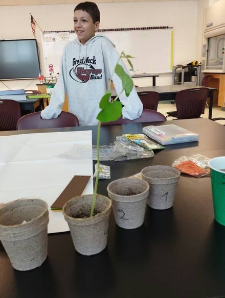
Preparing the pots before sowing

A bean placed on damp cotton wool

Each cup is numbered to compare growing conditions
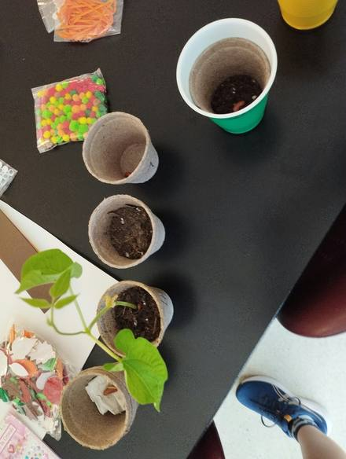
Two weeks later, the first leaves

Presenting the results on a poster


Coats of arms and cave painting
Each student designs a coat of arms that says something about them, and the sixth graders recreate a prehistoric painted cave on the classroom wall.

Coats of arms designed by the students

A painted cave recreated with handprints and animals


2025-2026
Field trip to Jamestown and Yorktown
The middle and high school classes spent the day at the Jamestown Settlement: the replica ships moored at the pier, the re-created Powhatan village and the 1607 James Fort, where the students handled period armour.

The replica ships at the pier
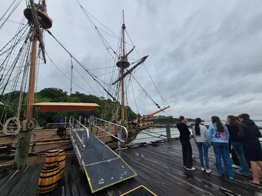
Boarding the Susan Constant

An interpreter explains life on board
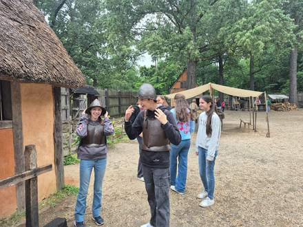
Trying on a helmet at James Fort
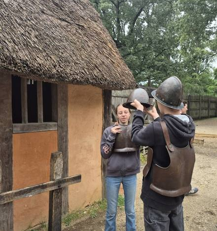
Period armour, explained and handled

In front of the wattle-and-daub houses
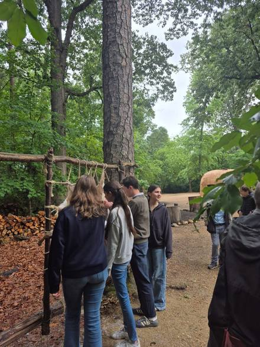
The re-created Powhatan village

The shelter where dugout canoes are hollowed out
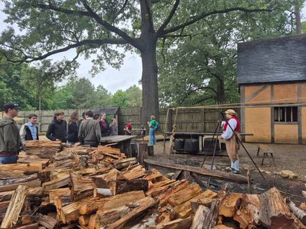
Split timber ready for building

Arriving at the museum


Yorktown commemoration
Every October the victory of 1781 is commemorated at Yorktown, a Franco-American anniversary the school takes part in.

Wreaths lined up before the ceremony
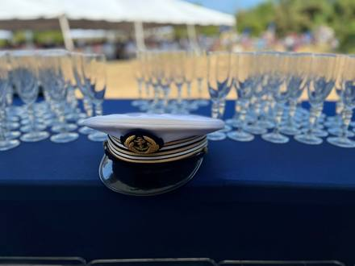
The reception that follows

Antiquity at Great Neck Middle School
A year spent with the ancient world: the voyages of Ulysses, the Olympic games painted on a Greek vase, clay tablets and calligraphy.

The voyages of Ulysses, mapped on the classroom wall

The Olympic games of ancient Greece, painted on a vase
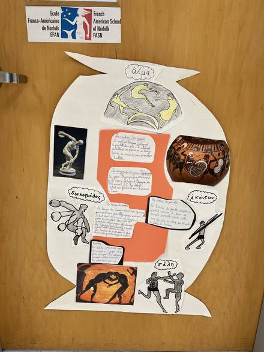
A second vase, with the school's crest above it

A clay tablet, finished
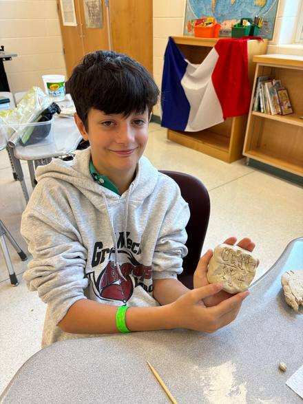
Writing in the clay
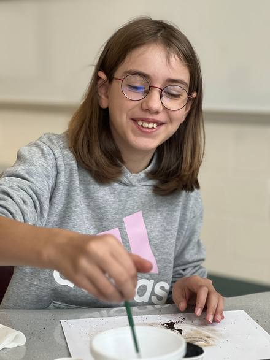
Grinding ink for calligraphy

Calligraphy, pen in hand
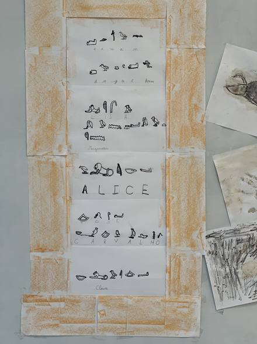
First names written in hieroglyphs

An ancient city, drawn and annotated

The FASN classroom at Great Neck


The French Revolution, eighth grade
Portraits and sources assembled around two figures of 1789.

Olympe de Gouges and Robespierre, studied side by side

Paper rose windows in the classroom window
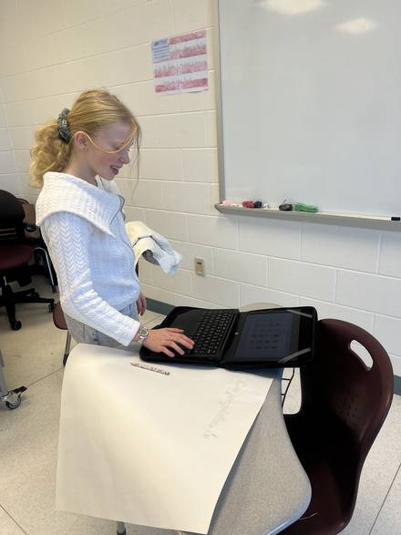
Working in the FASN room


Arts and history at Crossroads
The elementary class works on figures who changed history, in bold colour, and designs medieval coats of arms.

Katherine Johnson, in the manner of Andy Warhol

Nelson Mandela, portrait and biography
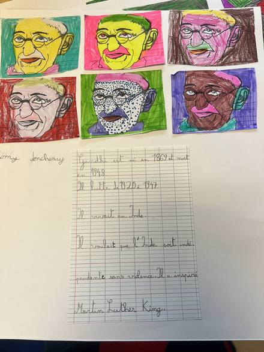
Martin Luther King, portrait and biography
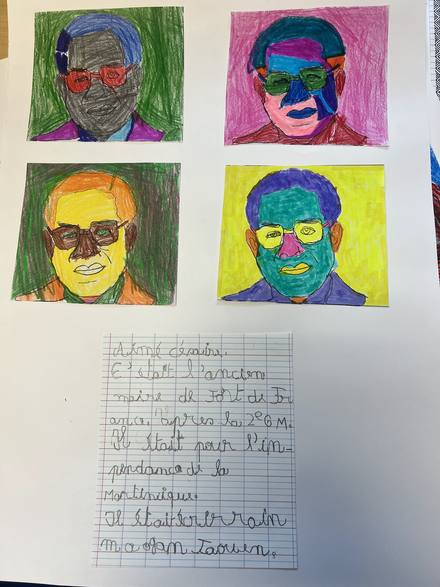
A third portrait and its text
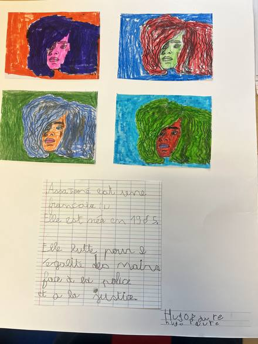
Six variations on one face
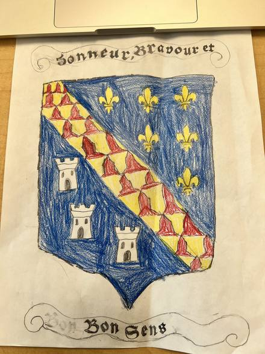
“Honour, bravery and good sense” — a coat of arms with fleurs-de-lis
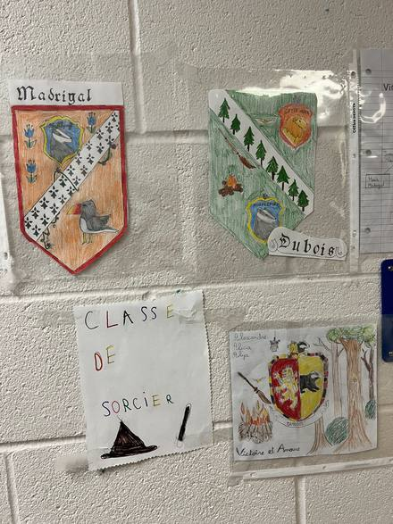
Coats of arms on the classroom wall
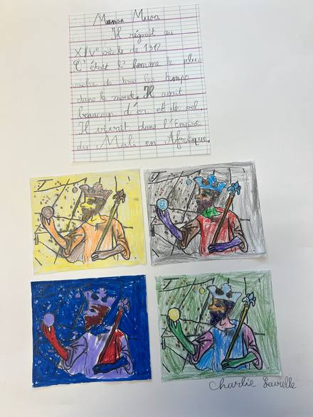
Musicians, drawn and coloured

A Hogwarts crest, drawn in pencil


The Second World War at Frank W. Cox
High school students built posters and a newspaper front page on the American war effort, propaganda and the place of women in the factories.
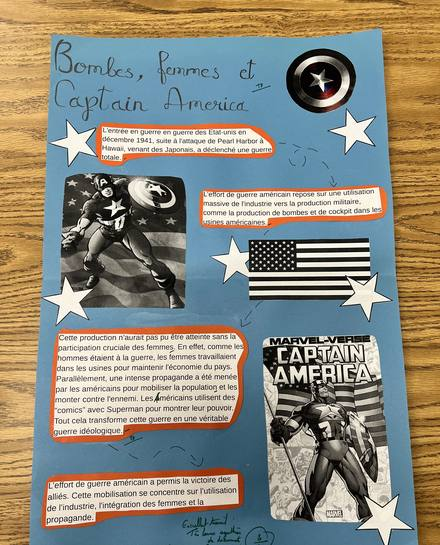
“Bombs, women and Captain America”: industry, propaganda and the war effort

“Pearl Harbor attacked, the United States mobilised”

“The United States at the heart of the war”
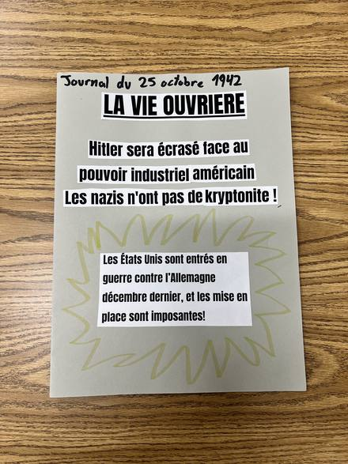
A front page dated 25 October 1942

An illustrated booklet, opened

A written exam in the FASN room at Cox


John B. Dey, from term to term
The elementary classroom at John B. Dey, and the corridors dressed for the end of the year.

The classroom, ready for the morning
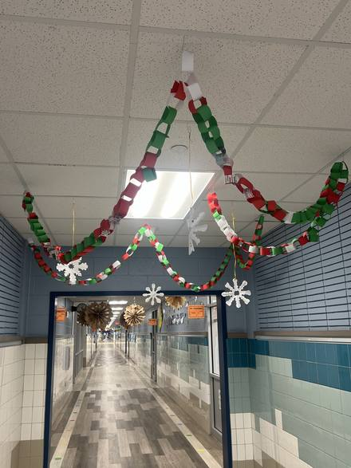
Paper chains across the corridor

A classroom door turned into a tree


French pastries for the host schools
Croissants and pains au chocolat brought to the staff of the American schools that host FASN classes — a thank-you that has become a tradition.
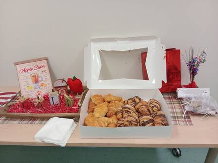
The boxes, just opened
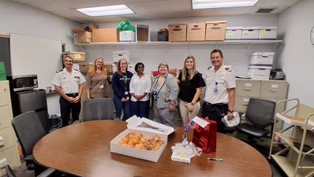
With the staff of a host school
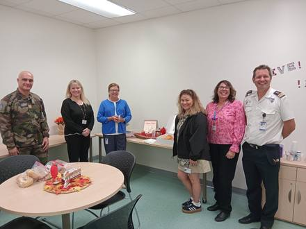
Another morning, another staff room

The French Navy representatives who come along